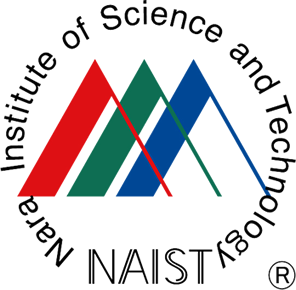
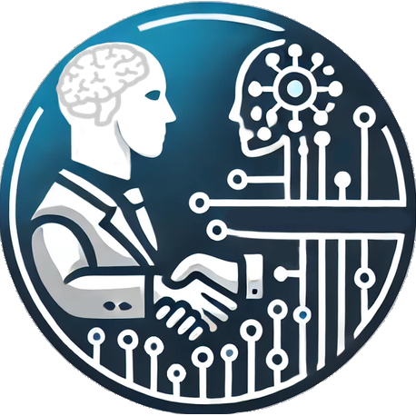

The workshop will provide tutorials on how detecting physical and mental wellness through human voice and AI. The materials from basic speech science to more advance speaker characteristics detection will be covered. These topics contributes SDG goal number 3 (Good Health and Well-being), programs number 1 for Bridging the gap between R&D and the IDeal society (society 5.0) and Generating Economic and social value (The Moonshot Research and Development Program goals number 3 [Coevolution of AI and Robot) and number 9 [increase of mind and vitality], as well as digital transformation by data utilization. A number of experts from Germany, Indonesia and Japan will be planned to provide fundamental and moderate background on speech science and technology through a total of 16 lectures.
This workshop aims to explore the intersection of speech science and technology by presenting methodologies for detecting speaker characteristics including physical and mental health. It will introduce participants to foundational knowledge in speech science and advance toward speaker characteristics and health-related voice signal analysis. The workshop is planned in response to the growing demand for non-invasive, cost-effective health screening tool and the emerging need for AI technologies to support social and mental wellness. The workshop will cover a wide range of topics, including:
Participants will also have the opportunity to present their own research and receive feedback from experts in the field.
This workshop is designed and open for students, researchers, and professionals in the field of speech science and technology, as well as those interested in the applications of speech technology particularly in healthcare. Participants should is expected to have a basic understanding of speech science and signal processing, but no prior experience with machine learning or AI is required.
The workshop will consist of a series of 16 sessions of lectures, hands-on, and discussions, both in-person at NAIST and online via Webex. The scheduled time is from 9:30 am to 4:30 pm (JST) each day from September 16 to September 19, 2025; however, anyone can attend any session freely (in-person capacity is 70 participants). Please bring your own laptops for the hands-on sessions. Install any necessary software beforehand [Git, SPTK, diffsptk, and Nkululeko]. Participants will have the opportunity to engage with experts in the field and collaborate with their peers on practical projects.
The workshop is organized by Human AI Interaction Laboratory, NAIST, Japan. The team includes experts in speech science, signal processing, and healthcare applications of speech technology. The organizers are committed to providing a high-quality workshop experience for all participants.
|  |  |